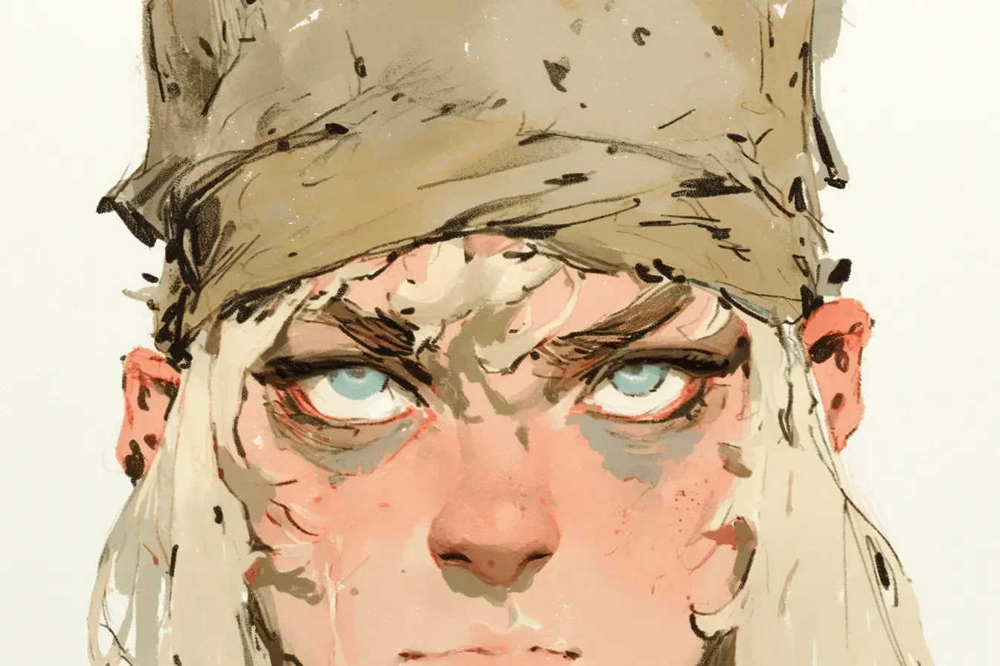

진흙이 두 번째 피부처럼 말라붙었지만, 그녀의 눈은 북극의 얼음처럼 맑았다. 소총의 조준경을 통해 표적의 저택이 시야에 들어왔다 - 아이들이 음식 부스러기를 두고 싸우는 땅에서 사치를 과시하는 거대한 증거물이었다. 바람이 그녀의 은신처를 스쳐 지나갔고, 북서쪽에서 3노트의 속도로 불어왔다. 800미터 사격을 위한 완벽한 조건이었다.
[The mud had dried into a second skin, but her eyes remained clear as arctic ice. Through the scope of her rifle, the target’s compound swam into focus, a sprawling testament to excess in a land where children fought for scraps. The wind whispered across her hide, a steady three knots from the northwest. Perfect conditions for the eight hundred meter shot.]
임무 브리핑은 냉정했다: 내전 양측에 무기를 공급해온 무기 중개상을 제거하라. 정보 자료에는 가족들에 대해 언급되어 있었지만, 실제로 그들을 보니 추상적인 데이터가 살과 피를 가진 존재로 변했다. 표적은 식탁에 앉아 있었고, 생명력과 따스함에 둘러싸여 있었다. 반면 그녀는 은신처에 누워있었고, 미세한 움직임 하나에도 말라붙은 진흙이 갈라졌다. 여섯 살도 채 되지 않아 보이는 그의 막내딸이 계속해서 테이블 너머로 손을 뻗어 오빠의 접시에서 올리브를 훔쳐 먹었고, 장난스러운 손사래와 저녁 공기를 타고 퍼지는 전염성 있는 웃음소리를 자아냈다.
[The mission brief had been clinical: eliminate the weapons dealer who’d been supplying both sides of the civil war. The intel had mentioned family, but seeing them transformed abstract data into flesh and blood. The target sat at his dinner table, surrounded by life and warmth, while she lay in her perch, dried mud cracking across her skin with every minute adjustment. His youngest daughter, no more than six, kept reaching across the table to steal olives from her brother’s plate, earning playful swats and infectious laughter that carried across the evening air.]
무전기에서 지직거리는 소리가 들렸고, 지휘부가 상황 보고를 요구했다. ‘표적 포착'이라는 말이 그녀의 목구멍을 조였고, 각 음절이 혀 위에서 재처럼 느껴졌다. 그녀는 사람이 아닌 표적만 보도록 훈련받았지만, 그 가족의 친밀한 저녁 식사 모습을 목격한 순간부터 그 경계가 흐려지기 시작했다. 운명의 메트로놈처럼, 이어피스에서 들리는 카운트다운은 탈출팀의 시간이 끝나가는 초를 세고 있었다. 이 은신처에서 18시간을 보냈고, 매 순간이 물이 돌을 깎아내듯 그녀의 결심을 갉아먹었다.
[The radio crackled in her ear, command demanding a status update. Her throat constricted around the words 'target acquired,’ each syllable tasting like ash on her tongue. She’d been trained to see targets, not people, but that line had started blurring the moment she witnessed the casual intimacy of their family dinner. Like a metronome of doom, the countdown in her earpiece ticked away the seconds until the extraction team’s window would close. Eighteen hours in this hide, and every minute had worn away at her resolve like water on stone.]
무기 중개상이 의자에서 일어나 아이들의 이마에 입맞춤을 하고 발코니 쪽으로 움직였다. 완벽한 사격 기회였다. 깔끔한 각도. 부수적 피해도 없었다. 그녀의 머릿속에서 전쟁이 벌어지고 있음에도 불구하고 십자선은 흔들림 없이 그의 가슴에 고정되어 있었다. 그 남자는 담배에 불을 붙였고, 담배 끝은 저물어가는 황혼 속에서 떨어진 별처럼 빛났다. 수천 명을 구하기 위한 한 사람의 목숨, 계산은 단순했지만, 그 계산은 그의 딸의 웃음소리가 안마당에 울려 퍼지는 방식이나 그가 아들의 머리를 다정하게 헝클어뜨린 모습은 계산에 넣지 않았다.
[The weapon dealer rose from his chair, pressing kisses to his children’s foreheads before moving toward the balcony. Perfect shot. Clean angle. No collateral. Her crosshairs settled on his chest, unwavering despite the war raging in her mind. The man lit a cigarette, its ember glowing like a fallen star in the gathering dusk. One life to save thousands, the math was simple, but math didn’t account for the way his daughter’s laughter echoed across the courtyard or how tenderly he’d ruffled his son’s hair.]
그녀는 천천히 숨을 내쉬었고, 평생의 훈련이 이 단 하나의 순간으로 결정화되었다. 십자선은 그의 두개골이 척추와 만나는 정확한 지점에 자리 잡았다, 빠르고, 깔끔하고, 최종적인 사격이 될 것이었다. 그는 발코니 난간에 기대어 서 있었고, 그의 마지막 일몰을 모른 채 담배 불빛이 황혼 속에서 게으른 패턴을 그렸다. 그녀의 손가락이 기계적인 정확도로 방아쇠를 당겼다. 총성이 저녁의 평화를 산산조각 냈고, 조준경을 통해 그녀는 그의 척추 사이에 나타난 깔끔한 붉은 꽃을 보았고, 이어서 그의 몸이 우아하지 못하게 무너지는 것을 지켜보았다. 그의 담배가 생명 없는 손가락에서 떨어져 타일 위로 떨어진 별처럼 불꽃을 흩뿌렸다. 귀에서 울리는 소리 너머로 아이들의 비명과 어머니의 통곡 소리가 들렸다. 그녀가 그림자 속으로 녹아 들어가는 동안, 무전기를 통해 들리는 지휘관의 칭찬 속에서, 피부에 말라붙은 진흙의 무게가 쇠사슬처럼 느껴졌다. 때로는, 그녀는 깨달았다, 전쟁의 가장 무거운 희생은 우리가 따르기로 선택한 명령이 아니라, 각각의 완벽한 사격과 함께 우리가 뒤에 남겨두고 온 인간성의 조각들이었다.
[She exhaled slowly, a lifetime of training crystallizing into this singular moment. The crosshairs settled on the exact point where his skull met his spine, a shot that would be quick, clean, final. His cigarette ember traced lazy patterns in the dusk as he leaned against the balcony rail, unaware of his last sunset. Her finger squeezed with mechanical precision. The crack of the shot shattered the evening peace, and through her scope, she watched the neat red blossom appear between his vertebrae, followed by the graceless crumple of his body. His cigarette tumbled from lifeless fingers, scattering sparks across the tiles like fallen stars. Above the ringing in her ears, she heard the children’s screams, their mother’s wails. As she melted away into the shadows, her commander’s praise crackling through the radio, the weight of dried mud on her skin felt like chains. Sometimes, she realized, the heaviest casualties of war weren’t the orders we chose to follow, but the pieces of our humanity we left behind with each perfect shot.]